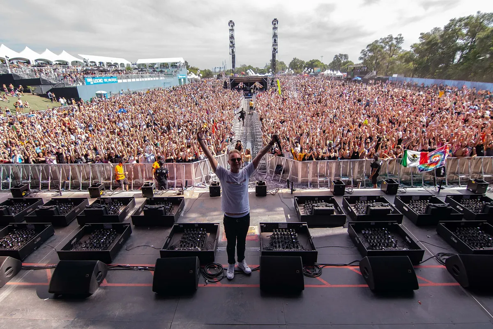
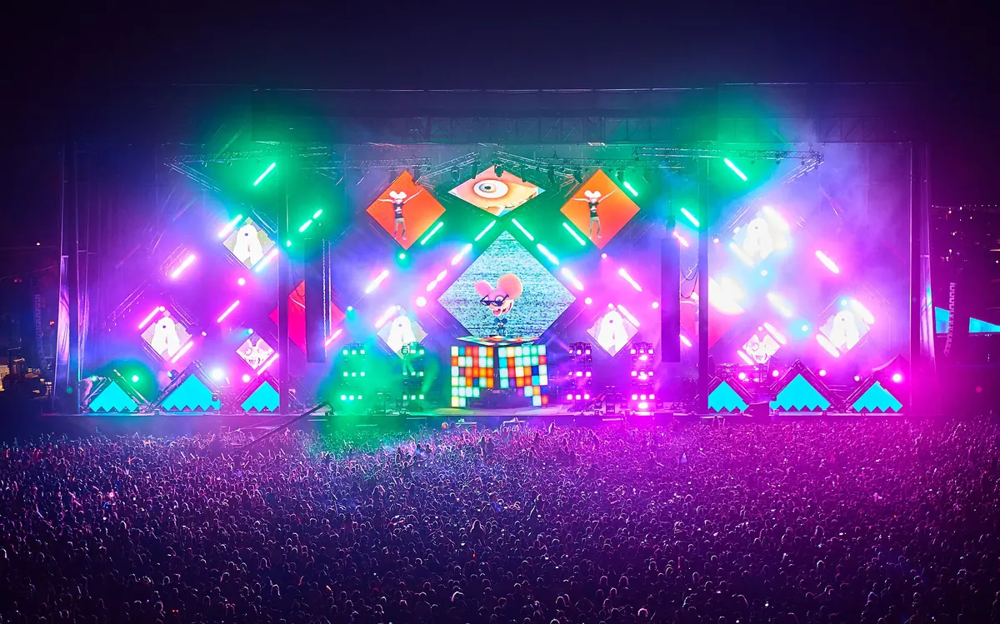
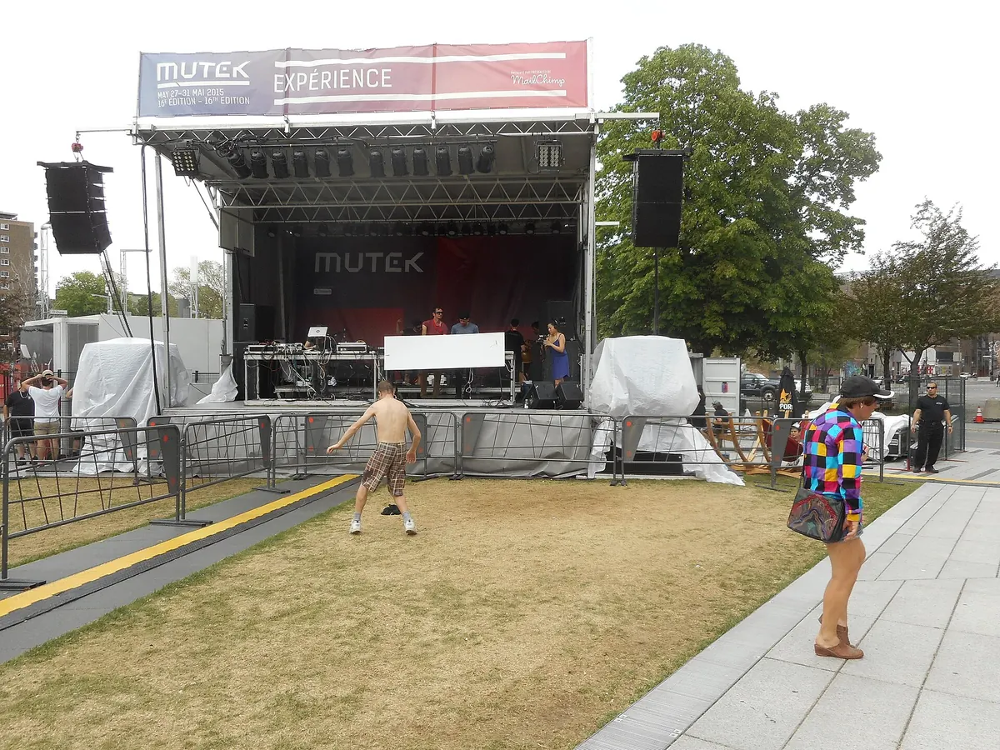
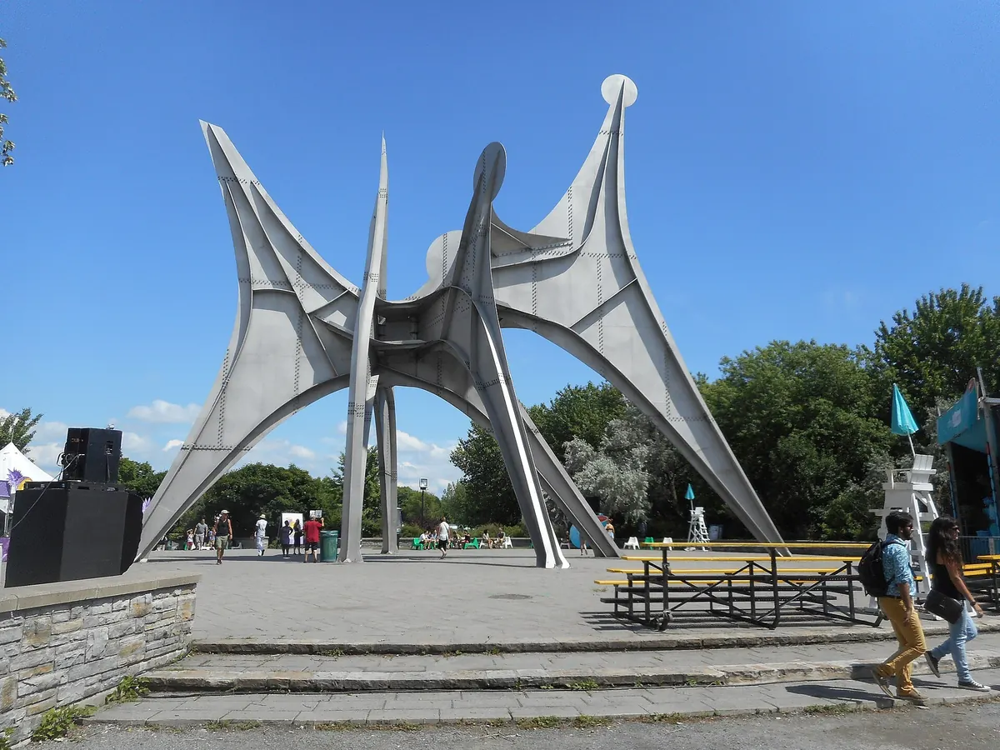
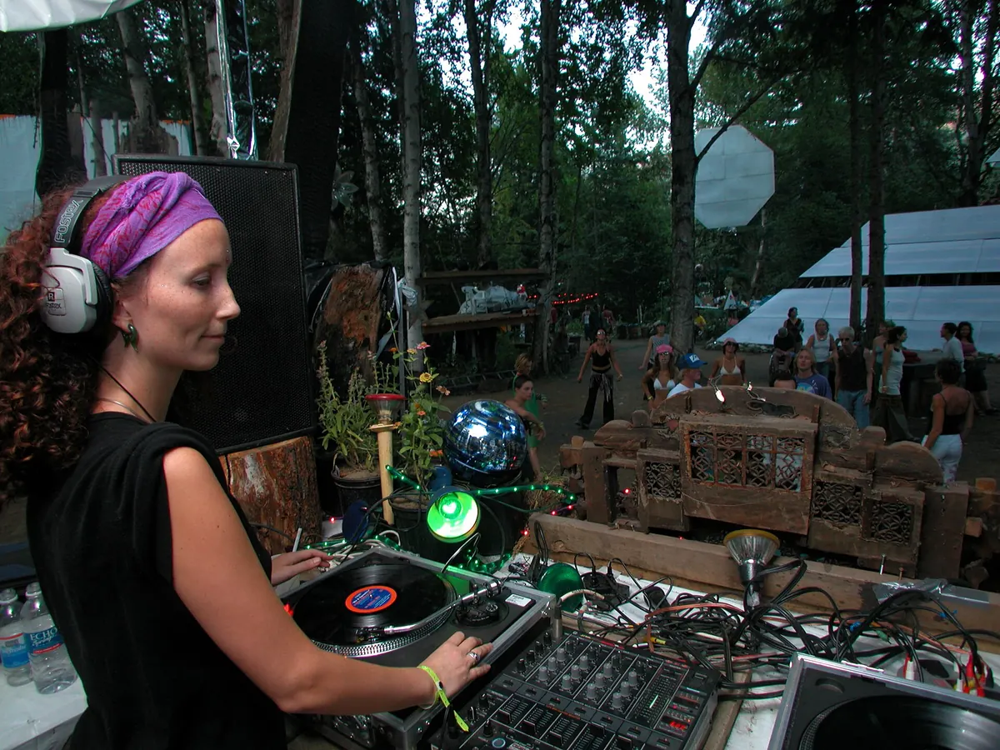

Festival guide, 2027
The best EDM festivals in Canada in 2027
Canadian EDM festivals compared by province, sound and scale, from city parks in Toronto and Montreal to camping weekends in British Columbia, with the 2027 dates that are confirmed and the ones that are not.
A list meant for choosing.
VELD in Toronto and Ile Soniq in Montreal are big-city park festivals with international headliners, and Shambhala is a farm in the Kootenays, a different kind of trip. Those three are the best EDM festivals Canada has to offer.
How this list was chosen.
A festival is on this list when these three things are true:
- Electronic music is the core of the programme.
- It has run in Canada recently, and it has either published a 2027 edition or given no sign of stopping.
- It is one of the leading events in its province or scene.
Only VELD appears in DJ Mag's Top 100 Festivals for 2026, at 40th, so scale here comes from what festivals and reporters have published.
A date from the festival's own site is shown as confirmed. A date found only on a ticketing or listing site is marked as listed, and should be treated as provisional until the festival publishes it.
Canadian EDM festival dates for 2027 at a glance.
The Canadian season is short. Almost everything falls between late June and late August, and the three biggest festivals are within three weeks of each other in 2027.
| Festival | Where | 2027 dates | Sound | Scale | Best for |
|---|---|---|---|---|---|
| Electric Island | Toronto, Ontario | Not announced (May to August in 2026) | Electronic | A season of day events | A day out in the city |
| Escapade | Ottawa, Ontario | Not announced (26 to 28 June in 2026) | EDM | Three days in 2026 | A weekend in Ottawa |
| Bass Coast | Merritt, BC | 9 to 12 July | Bass music and electronic | Five stages, 150+ artists | An independent camping weekend |
| FVDED in the Park | Surrey, BC | July, days not announced | EDM and hip-hop | Two days | A big stage near Vancouver |
| Shambhala | Salmo, BC | 23 to 26 July (sold out) | Bass music and electronic | 23,500 on site | A long camping weekend |
| VELD | Toronto, Ontario | 30 July to 1 August | Big-stage EDM | Three days, no official figure | Headliners in Ontario |
| Chasing Summer | Calgary, Alberta | Listed 31 July to 1 August | EDM | About 30,000 a year (2023 report) | A summer weekend in Alberta |
| Ile Soniq | Montreal, Quebec | Listed 7 to 8 August | Big-stage EDM and hip-hop | 76,000 over two days in 2025 | Headliners in a city park |
| MUTEK | Montreal, Quebec | 24 to 29 August | Experimental electronic | Six days | Listening closely |
| Piknic Électronik | Montreal, Quebec | Not announced (May to October in 2026) | House, techno | A season of parties | A Sunday in the park |
What is the biggest EDM festival in Canada?
Ile Soniq has the biggest published count. The festival reported about 76,000 people over two days in 2025, with 43,000 on the Saturday, its largest single day. VELD is often called the largest in Canada, but it gives no recent official figure. Shambhala says it has 23,500 guests, crew and artists on site, a little over half Ile Soniq's best day, and it lasts four days.

The practical difference between them is where you sleep. VELD and Ile Soniq are city festivals, so you book a hotel. At Shambhala you camp.
Toronto and Ontario.
Toronto EDM festivals start with VELD. Electric Island is the smaller city option, and Ontario's other big name, Escapade, is in Ottawa.
VELD, Toronto
VELD is held at Downsview Park in the north of Toronto, and the 2027 edition is on 30 July to 1 August. Early-bird passes have sold out, and the festival is taking sign-ups for the next release. It is a big-stage festival with international headliners, and it ranks 40th in DJ Mag's list. It suits anyone who wants the biggest lineups in Ontario without camping.

Electric Island, Toronto
Electric Island is an open-air concert and picnic series with several electronic stages. It ran its 14th season in 2026, from May to August, at Woodbine Park and in the Portlands. The 2027 dates have not been announced.
Montreal and Quebec.
Montreal has the deepest electronic calendar in Canada: Ile Soniq for headliners, MUTEK for experimental music and Piknic Électronik for Sundays.
Ile Soniq
Ile Soniq, written îLESONIQ by the festival, takes over Parc Jean-Drapeau, on the islands in the St Lawrence, and it held its 11th edition on 8 and 9 August 2026. About 30% of the 2025 crowd came from outside Quebec. Ticket sellers list 7 and 8 August 2027, and the festival has not confirmed those dates yet. It runs for two days across several stages, and the metro stops at the park.
MUTEK, Montreal
MUTEK is a festival of electronic music and digital art, and its 28th edition is on 24 to 29 August 2027. It suits people who want to listen closely more than they want a main stage.

Piknic Électronik
Piknic Électronik is a season of outdoor parties at Parc Jean-Drapeau, mostly on Sundays, and the 2026 season ran from 17 May to 18 October. The 2027 dates have not been announced. It is a good way to see the city's scene without buying a festival pass.

British Columbia.
British Columbia is where the camping festivals are.
Shambhala
Shambhala Music Festival runs on 23 to 26 July 2027 at Salmo River Ranch, a 500-acre farm in Salmo, and the 2027 edition has sold out. The ways in now are the festival's waitlist, a ticket sold on through its own online system, or joining its crew as staff or a volunteer. It began in 1998 with about 500 people and is now a family-run festival of six stages and more than 200 artists, and it takes no sponsors. It is known for bass music, and it is a long drive from anywhere.

Bass Coast
Bass Coast is on 9 to 12 July 2027 at Merritt, three hours from Vancouver, and it will be the festival's 19th year. It is independent and artist-owned, with five stages and more than 150 DJs and producers.
Beyond the stages there are more than 40 workshops and more than 50 interactive art pieces, and 2027 tickets are on sale with limited capacity. The festival also films its own stages, so you can hear what it books before you go. This is Ternion Sound from the 2025 edition.
FVDED in the Park
FVDED in the Park returns to Holland Park in Surrey in July 2027, and it is the big-stage option close to Vancouver. The exact days are not out yet. It ran over two days in early July in 2024 and 2025.
Ottawa and Calgary.
Beyond Toronto, Montreal and British Columbia, these two cities each have one main summer EDM festival.
Ottawa: Escapade
The main Ottawa EDM festival is Escapade. The 2026 edition was on 26 to 28 June on the RA Centre grounds, and the 2027 dates have not been announced.
Calgary: Chasing Summer
Chasing Summer is the Calgary EDM festival, held at Max Bell Centre and called Alberta's largest outdoor EDM festival, with a reported 30,000 people a year in 2023. The 2026 edition was on 1 and 2 August. One listing gives 31 July and 1 August 2027, but the festival has not confirmed that.
Not on this list, and why.
- Igloofest. It is a Montreal winter festival, so it belongs in the guide to the best winter music festivals.
- General music festivals. Osheaga and other major Canadian festivals carry electronic acts, but as one part of a wider bill.
How to choose.
For headliners and a hotel, pick VELD or Ile Soniq. Toronto and Montreal are a short flight apart, and in 2027 Ile Soniq's listed dates fall one week after VELD, so you could do both. Bass Coast is the easier camping ticket, because Shambhala 2027 has sold out. MUTEK is the quiet choice.
For the rest of North America, see the best EDM festivals in the US.
Canadian EDM festivals FAQ.
What EDM festivals are in Canada?
The main EDM festivals in Canada are VELD in Toronto, Ile Soniq in Montreal, Shambhala and Bass Coast in British Columbia, FVDED in the Park in Surrey, Escapade in Ottawa and Chasing Summer in Calgary. MUTEK in Montreal covers the experimental side.
What are the largest music festivals in Canada?
Among the electronic music festivals Canada hosts, Ile Soniq has the largest published crowd, with 43,000 on its busiest day. VELD is the other very large one, though it publishes no figure, and Shambhala sells out at 23,500 people on the farm.
When is Shambhala Music Festival in 2027?
Shambhala runs from 23 to 26 July 2027 in British Columbia. It has sold out, so your options are its waitlist, its own ticket system or working on the crew.
Sources.
- 2027 dates from each festival's own pages: Shambhala, Bass Coast, MUTEK, VELD and its ticket page, FVDED in the Park (month only).
- 2026 dates, with 2027 not announced: Piknic Électronik, Escapade, Electric Island.
- Listed dates: Live Nation, Ticketmaster and Discotech (Ile Soniq), Frontstage (Chasing Summer).
- Scale: Montreal Times, with figures supplied by the festival (Ile Soniq 2025), Shambhala, Daily Hive (Chasing Summer).
- Poll rank: DJ Mag: Top 100 Festivals 2026.
Continue reading
Read next.
 Festivals~6 min read
Festivals~6 min readBest New Year's Eve Festivals 2026 into 2027
Countdown NYE, Decadence, HiJinx, Rhythm and Vines and Awakenings: the best New Year's Eve festivals for dance music in 2026, with dates and where they are.
Read article → Festivals~7 min read
Festivals~7 min readSziget Festival 2027: Dates, Music, Camping and Travel
Five days on Óbuda Island, with pop, rock and hip-hop beside club stages, theatre, circus and a rail link into Budapest.
Read article → Festivals~7 min read
Festivals~7 min readMonegros Desert Festival 2027: Date, History and Guide
One long electronic event on exposed land near Fraga, with roots in Florida 135 and stages running through the night.
Read article → Festivals~14 min read
Festivals~14 min readBest Electronic Music Festivals in Europe 2027, Compared
Fourteen major festivals and seven smaller ones, from Tomorrowland to Garbicz, compared by sound, scale, setting and 2027 dates.
Read article →Want something to play while you read? Let the Selector pick a DJ set.